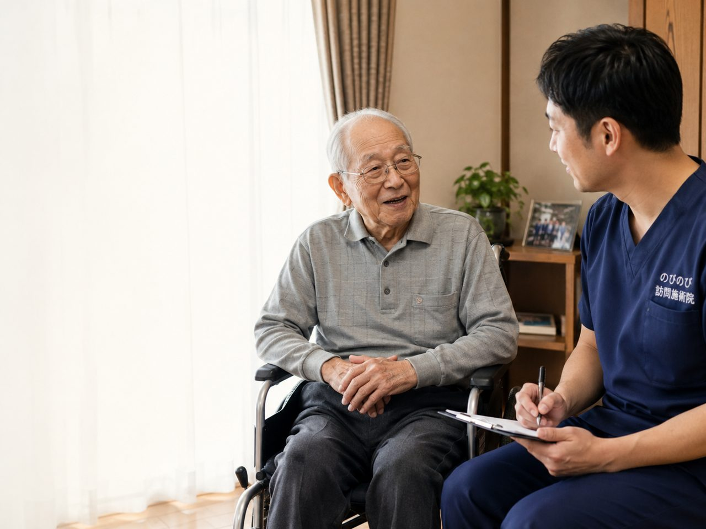

茨木市で暮らすご家族が、膝や腰の痛み、手足のしびれで通院に苦労している。近くに住んでいても、毎回の付き添いまでは難しい。そんなときに頼れるのが、自宅まで伺う訪問鍼灸マッサージです。のびのび訪問施術院は、はり・きゅうを軸に、長く続く痛みやこわばりに向き合います。医師の同意書があれば医療保険が使え、1割負担なら1回およそ395円。まずは対象になるかの確認だけでも構いません。
まず大事なところから。訪問鍼灸マッサージは、通院が難しくなった方の自宅へ国家資格者が伺うサービスです。対象は、医師が必要と認めた慢性的な痛みやしびれ。費用は医療保険で計算し、1回の総額3,950円のうち負担割合の分だけをお支払いいただきます。1割で約395円が目安です。要介護認定がなくても、医師の同意があれば利用でき、介護保険の支給限度額とは別枠。茨木市はJR茨木駅・阪急茨木市駅の周辺から彩都・山手台まで、市内全域が対応エリアです。
茨木市で、通院そのものが負担になってきた方へ
膝や腰が痛む、脳梗塞のあとに体が思うように動かない、家族の付き添いがないと外に出られない。そんな状態で定期的に治療院へ通い続けるのは、ご本人にもご家族にも大きな負担になります。のびのび訪問施術院は、国家資格を持つ施術者が茨木市内のご自宅や施設へ伺い、はり・きゅう・マッサージを行う訪問専門の施術院です。ご本人が動かなくても、いつもの部屋で受けられます。
対応しているのは茨木市の全域です。JR茨木駅や阪急茨木市駅、南茨木駅、総持寺駅の周辺はもちろん、総持寺や沢良宜、東奈良、西河原、春日、豊川、安威、彩都や山手台まで伺っています。市境で吹田市や箕面市、摂津市に近い地域にお住まいの方も、まずはご相談ください。市境の細かい線引きが気になる場合は、対応エリアはどこまで来てもらえる？もあわせてご覧ください。
「茨木市の訪問マッサージ」をお探しの方へ
茨木市で在宅の施術を探すとき、「茨木 訪問マッサージ」「茨木市 訪問マッサージ」といった言葉で調べる方がほとんどだと思います。ご本人よりも、離れて暮らすご家族が先に調べておられることもよくあります。ただ、この「訪問マッサージ」という言い方の中には、制度としては別々の枠組みが入っています。
ひとつは、はり・きゅうの療養費です。神経痛、リウマチ、頸肩腕症候群、五十肩、腰痛症、頸椎捻挫後遺症といった慢性的な痛みについて、医師が施術を必要と認めた場合が対象になります。もうひとつは、あん摩マッサージ指圧の療養費で、麻痺や関節の動かしにくさなどについて医師が必要と認めた場合が対象です。どちらにあたるかは体の状態と医師の判断によりますので、あらかじめ決めておく必要はありません。ちがいは訪問マッサージと訪問鍼灸の違いでくわしくご説明しています。
のびのび訪問施術院は、はり・きゅうを施術のベースにしていて、保険はすべて鍼灸で算定します。その日の体の状態を確認しながら鍼やお灸を行い、必要に応じて手技やストレッチ、無理のない範囲で身体を動かす運動なども組み合わせます。ですから「訪問マッサージ」という言葉でお探しの方にとっては、当院の施術は「訪問鍼灸」に近い形になります。
うかがう範囲は茨木市内の全域です。JR茨木・阪急茨木市の周辺はもちろん、南茨木、総持寺、沢良宜、玉櫛、水尾、彩都のほうまで伺います。真砂や東奈良、中穂積や西河原、郡山や耳原、太田や宿久庄といった地区も同じです。エリア内であれば別途の出張費・交通費はかかりません。
市境にお住まいで、うちは入るのだろうかと気にされる方もおられます。茨木市内であれば全域が対応ですし、東隣の高槻市、南の摂津市、西の吹田市も同じく対応エリアです。まずはお住まいを教えてください。
保険が使えるのは、どんな症状のときか
訪問での鍼灸に医療保険（療養費）が使えるのは、医師がはりやお灸での施術を必要と認めた慢性的な痛みやしびれです。療養費の対象として定められているのは、神経痛・リウマチ・頸肩腕症候群・五十肩・腰痛症・頸椎捻挫後遺症の6つ。むち打ちのあとに長く残る首や肩のつらさ、なかなか上がらない肩、坐骨神経痛による足のしびれなどが、この枠に含まれます。
実際にご相談が多いのは、脳梗塞のあとのこわばりや麻痺、膝の痛み、手足の冷えやしびれ、それにパーキンソン病にともなう動かしにくさです。施術ははりとお灸を軸に、固まった筋肉をゆるめる手技を組み合わせ、動く範囲を保つための機能訓練も加えていきます。いずれも1回の施術の中で行うものです。ただ、鍼灸は病気そのものを治すものではありません。効き方には個人差がありますし、その日の体調にも左右されます。パーキンソン病で在宅ケアを検討されている方は、茨木市でパーキンソン病の在宅ケアもお読みください。
茨木市で続けると、毎月いくらかかるのか
気になるのは費用だと思います。1回の施術は総額で3,950円。ここに医療保険が使えるので、実際に負担いただくのは、1割の方で約395円です。たとえば週2回のペースで受けていただくと、1割負担の方なら1か月でおよそ3,160円という計算になります。
この金額に、別途の出張費や交通費は含まれません。茨木市内であれば、どの地域に伺っても料金は同じです。介護保険を使っている方でも、その支給限度額とは別の枠で併用できます。負担割合ごとの内訳や保険の仕組みは料金はいくら？医療保険の自己負担額と仕組みで詳しくまとめています。
要介護認定がなくても、施設に入っていても受けられます
訪問鍼灸マッサージに、要介護認定は必要ありません。認定を受けていない方でも、医師の同意書があれば始められます。逆に、すでに介護保険で他のサービスを利用している方も、先ほどお伝えした通り別枠での併用が可能です。
ご自宅だけでなく、有料老人ホームやサービス付き高齢者向け住宅などに入居されている方のところにも伺います。ひとつだけご注意いただきたいのは、同じ部位について医療保険でリハビリを受けている場合、その部位の鍼灸は同じ月に一緒には算定できないという点です。どの部位をどう組み立てるかは、体の状態を見ながらご相談のうえで決めていきます。
茨木市で、まずどこに相談すればいいのか
「親の体が弱ってきたけれど、どこに聞けばいいのか分からない」。茨木市の方からいただくご相談で、いちばん多い入口がこれです。介護保険のことも、医療のことも、住まいのことも、相談先がばらばらに見えるからだと思います。
迷ったときの最初の一歩は、お住まいの地区を担当する地域包括支援センターです。茨木市は北・東・西・中央・南の5つの圏域に分かれていて、小学校区ごとに担当のセンターが決まっています。清溪・忍頂寺・山手台、安威・福井・耳原、豊川・郡山・彩都西、太田・西河原、三島・庄栄、東・白川、春日・郡・畑田、沢池・西、春日丘・穂積、茨木・中条、大池・中津、天王・東奈良、玉櫛・水尾、玉島・葦原。ご自身の担当がどこかは、茨木市の地域包括支援センターのページで確かめられます。
センターには保健師、社会福祉士、主任ケアマネジャーがいて、介護保険の申請から介護予防の相談まで受け付けています。要介護認定をまだ受けていない方にとっても、ここが入口になります。
先に当院に聞いていただいても構いません
ひとつ知っておいていただきたいのは、訪問鍼灸マッサージは医療保険のサービスだということです。介護保険のケアプランに載せる必要がありません。ですから、地域包括支援センターやケアマネジャーに相談してからでも、先に当院にお問い合わせいただいてからでも、どちらの順番でも進められます。
「まだ介護認定を受けていないから、相談する資格がないのでは」と遠慮される方がいらっしゃいますが、その必要はありません。判断の材料になるのは、通院がむずかしいかどうかと、医師が施術を必要と認めるかどうかです。体の状態とお住まいの地区をうかがえれば、その方の場合をご説明します。
すでにケアマネジャーがついている方は、あとから共有すれば大丈夫です。ケアプランの枠を使わないので、ほかのサービスを削る必要もありません。段取りはケアマネジャーの方への連携と紹介の流れにまとめています。
ケアマネジャーや、離れて暮らすご家族との連携
担当のケアマネジャーがいる方の場合は、ケアプラン全体の中で無理が出ないよう、連携しながら進めます。訪問の様子を共有しておくことで、他のサービスとの兼ね合いも整理しやすくなります。
ご家族が遠方にいらっしゃるケースもめずらしくありません。そうした方には、施術のたびに電話や報告書で体の様子をお伝えしています。「今日は膝の張りがいくらか和らいでいました」といった具体的な変化も、あわせてお伝えするようにしています。もちろん、良くなった点だけでなく、気になる兆候があればそのつどご連絡します。
初めての方が気になること
始め方はシンプルです。まずはお電話などでご連絡いただき、体の状態と今の通院事情を聞かせてください。保険の対象になりそうかを確認し、かかりつけ医の同意書をもらう手続きは当院がお手伝いします。訪問は平日にうかがいます。土曜・日曜・祝日はお休みをいただいており、時間は9時から18時までです。その範囲で、ご家庭や施設のご都合に合わせて曜日と時間を決めていきます。同じ曜日・同じ時間での定期訪問をご希望になる方が多く、ふだんの予定に合わせやすい形にできます。
知らない人を家に上げることに、ためらいを感じる方もいらっしゃると思います。その気持ちはもっともなことです。私たちは約束の時間を守り、清潔な身なりで伺い、お部屋やプライバシーに立ち入りすぎないよう気をつけています。その日に何をするのか、体が今どんな状態なのかは、そのつど分かりやすい言葉でお伝えします。しつこい勧誘をすることはありません。茨木市で通院に困っている方が、少しでも楽に施術を受けられるよう、まずは一度ご相談いただけたらと思います。
訪問先でうかがったお話
訪問の日を待っていてくださる方が多くおられます。ある方からは、玄関を開けたときに「ちゃんと待っててくれて」というお話がありました。触れる手が温かいことに、ほっとされる方もいます。体のことだけでなく、決まった曜日に人が来ることそのものが、暮らしのリズムになっているのだと感じます。茨木市内では、その方の生活に合わせて曜日と時間を決め、続けやすい形を一緒に探しています。
よくある質問
地域包括支援センターとケアマネジャー、どちらに先に相談すればいいですか？
どちらでも構いません。訪問鍼灸マッサージは医療保険のサービスで、介護保険のケアプランに載せる必要がないためです。まだ介護認定を受けていない方は、お住まいの小学校区を担当する地域包括支援センターが最初の相談先になります。すでに担当のケアマネジャーがいる方は、あとから共有していただければ大丈夫です。当院に先にお問い合わせいただいても、そこから整理できます。
「茨木市で訪問マッサージを探している」のですが、こちらでも大丈夫でしょうか？
はい、ご相談いただけます。当院は茨木市内全域へ伺っており、はり・きゅうをベースに、その日の状態に応じて手技やストレッチなども組み合わせています。制度のうえでどの枠組みにあたるかは体の状態と医師の判断によりますので、まずは対象になるかの確認だけでも構いません。
茨木市内ならどこまで来てもらえますか？
茨木市は全域が対応エリアです。JR茨木・阪急茨木市駅の周辺から、総持寺・南茨木・沢良宜、春日・豊川・安威、そして彩都・山手台のような北部の住宅地まで伺っています。市境にお住まいの方も承っていますので、まずはお住まいを教えてください。
要介護認定を受けていませんが、使えますか？
使えます。訪問鍼灸マッサージは医療保険を使うサービスで、要介護認定がなくても、医師の同意書があれば利用できます。同意書をもらう手続きは当院が進めます。
茨木市で1か月にどのくらいの費用ですか？
回数によります。1割の方で週1回なら月およそ1,580円、週2回で3,160円が目安です。別途の出張費や交通費はかからず、エリア内は同額。介護保険の限度額とも別枠です。金額は前もって分かります。
施設に入っていても受けられますか？
多くの有料老人ホームやサービス付き高齢者向け住宅で、施設の了承を得たうえで受けていただけます。居室で、ベッドや車いすの姿勢のままでも施術できます。まずは施設のスタッフやご家族を通してご相談ください。
土日に来てもらえますか？
土曜・日曜・祝日はお休みをいただいています。うかがえるのは平日の9時から18時までです。ご家族が立ち会えない日でも、ご本人おひとりのところへうかがう形で続けておられる方はたくさんいます。初回だけ立ち会っていただけると、目標やご希望をうかがいやすくなります。
茨木市ではどんな症状が対象になりますか？
医師が施術を必要と認めた、慢性的な痛みやしびれが対象です。茨木市では脳梗塞後のこわばり、膝の痛み、坐骨神経痛、パーキンソン病にともなう動かしにくさなどのご相談が多く寄せられます。まずは状態をお聞かせください。
症状ごとに、もう少し踏み込んでまとめたページもあります。腰から足にかけてのしびれなら茨木市の坐骨神経痛・腰から足の痛み、腕が上がらないつらさなら茨木市で五十肩・肩の痛みにお悩みの方へ、立ち座りがつらいなら茨木市で膝の痛みにお悩みの方へ、手足の動かしにくさなら茨木市のパーキンソン病の在宅ケア、脳梗塞のあとの麻痺やこわばりなら茨木市で脳梗塞の後遺症ケアをお探しの方へをご覧ください。
茨木市で一人暮らしでも頼めますか？
はい、ひとり暮らしの方も受けられます。ご在宅の時間に合わせて伺い、急なときのご連絡先をうかがって、安心して受けられるようにします。
どのくらいの頻度・曜日で来てもらえますか？
体の状態に合わせ、週1〜数回など体の様子を見ながら調整します。うかがえるのは平日の9時から18時までで、土日祝はお休みです。その範囲で決まった曜日・時間帯に定期的に伺うことが多く、暮らしのリズムに組み込みやすくなっています。
出張費や交通費は別にかかりますか？
かかりません。エリア内であれば、茨木市のどこにお住まいでも料金は同額です。お支払いは月ごとにまとめてお願いしています。

茨木市で膝の痛みにお悩みの方へ｜自宅で受ける訪問鍼灸マッサージ
続きを読む
茨木市で坐骨神経痛・腰から足の痛みにお悩みの方へ｜自宅で受けられる訪問鍼灸マッサージ
続きを読む
茨木市で五十肩・肩の痛みにお悩みの方へ｜自宅で受ける訪問鍼灸
続きを読む
茨木市でパーキンソン病の在宅ケア｜こわばり・動きにくさに訪問鍼灸マッサージ
続きを読む
淀川区の訪問鍼灸マッサージ｜十三・新大阪・西中島など、通わずに家で受ける痛み・しびれのケア
続きを読む